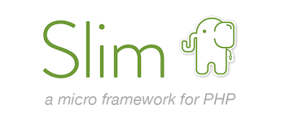

{% extends "../_base_template.html" %}
{% block title %}Lektion 7 - Entwicklung, Bind Mount{% endblock %}

{% block sections %}
<section data-markdown>
<textarea data-template>
# <i class="fas fa-graduation-cap"></i> M347 - Dev-Container, Zugriff auf managed volumes

## Heutiges Ziel

- Rekapitulation / Fertigstellung Aufgabe von letzter Lektion
- Sie können Container und Bind Mounts für eine Entwicklungsumgebung nutzen
- Sie wissen, wie Sie auf die Daten in Managed Volumes zugreifen und diese sichern können

</textarea>
</section>

<section data-markdown>
<textarea data-template>
# <i class="fas fa-graduation-cap"></i> Rekapitulation Übung MySQL + PHPMyAdmin

<div>

</div>

* Gibt es Fragen?
* Anschauen eines Beispiels von Ihnen
	* Aufzeigen der getätigten Schritte
	* Aufzeigen des PlantUML-Diagramms
</textarea>
</section>

<section data-markdown>
<textarea data-template>
# <i class="fas fa-graduation-cap"></i> Container / Bind Mount für die Entwicklung nutzen

Docker resp. Container eröffnen Ihnen auch für die Software-Entwicklung neue Möglichkeiten:

* Sie können Programmiersprachen / Frameworks nutzen, welche Sie lokal nicht (oder nur schwierig) installieren können
* Sie können dafür sorgen, dass Ihr Entwicklungsteam alle dieselben Tools nutzen (können):<br>So können Sie standardisierte
  Entwicklungsumgebungen schaffen
* Sie können Entwicklungsumgebungen im Nu starten, ohne langwierige Installations- und Konfigurations-Aufwände

Wir schauen uns dies an einem Beispiel an:

Wir bauen einen **Entwicklungs-Container für die Sprache PHP**, und setzen ein **kleines PHP-Framework** (SlimPHP) darin auf. Dann nutzen wir
**Bind Mounts**, um im lokalen Code-Editor zu programmieren.



[SlimPHP](https://www.slimframework.com/) ist ein **Micro-Framework** für PHP. Es nimmt Ihnen viel "Boilerplate"-Code ab, den Sie für eine Web-Applikation sonst "von Hand" schreiben müssten.

**Ziel:**

* Erstellen eines Containers mit PHP und einem Web-Server (Apache)
* Einrichten eines kleinen PHP-Projekts mit dem Slim-Framework
* Nutzen von Bind Mounts, um lokal im Code-Editor zu programmieren

</textarea>
</section>

<section data-markdown>
<textarea data-template>
# <i class="fas fa-flask"></i> Setup Container

Wir benötigen als Erstes einen Container mit PHP, einem Apache HTTP-Webserver,
und den nötigen Apache-Modulen: Wir setzen dies (heute) manuell auf:

Wir starten einen neuen Container vom Image `php`, mit dem Apache-Webserver.
Für das Webroot (`/var/www/html`) nutzen wir einen **Bind Mount** auf ein lokales Verzeichnis `phpprojekt`:

```bash
mkdir phpprojekt
docker run -d --name slimtest -ti -p 8888:80 -v "${pwd}/phpprojekt:/var/www/html" php:8.4-apache
```

Volià, schon haben wir unseren Container!

Ein kleines Test-PHP-File zeigt uns, dass alles läuft:

```php
<?php
// Datei: phpprojekt/test.php
echo "<h1>Hello World!</h1>";
```
Öffnen Sie im Browser <http://localhost:8888/test.php> - Sie sollten die Meldung "Hello World!" sehen.

Der **Bind Mount** sorgt dafür, dass wir die Datei `test.php` im lokalen Verzeichnis `phpprojekt` erstellen können, und der Webserver im Container diese Datei dann ausliefert.

Wir **mounten** (engl. *to mount* = *einhängen*) also das lokale Verzeichnis `phpprojekt` in den Container, und zwar an die Stelle, wo der Apache-Webserver seine Dateien erwartet (`/var/www/html`).	

So können wir lokal im Code-Editor programmieren, und der Webserver im Container liefert die Dateien aus.
</textarea>
</section>

<section data-markdown>
<textarea data-template>
# <i class="fas fa-flask"></i> Installation SlimPHP im Container

Wir konfigurieren nun unseren Webserver-Container so, dass er für SlimPHP vorbereitet ist. Dazu führen wir 
Befehle im Container aus, in dem wir eine interaktive Shell (`bash`) im Container starten:

```bash
docker exec -it slimtest bash
```

Dann, im Container:

```bash
# Installieren der notwendigen Tools: git und unzip:
apt update
apt install git unzip

# Aktivieren des Apache-Moduls "rewrite" (für "sprechende" URLs)
a2enmod rewrite
service apache2 reload

# Installieren von php composer, dem Paketmanager für PHP:
# (siehe https://getcomposer.org/download/)
php -r "copy('https://getcomposer.org/installer', 'composer-setup.php');"
php composer-setup.php
php -r "unlink('composer-setup.php');"
mv composer.phar /usr/local/bin/composer


# Nun installieren wir SlimPHP
composer require slim/slim:"4.*"
composer require guzzlehttp/psr7 "^2"
```

Somit haben wir das Grundgerüst für SlimPHP installiert. Wir haben dies heute **absichtlich von Hand gemacht**,
damit Sie die nötigen Schritte nachvollziehen können.

Wir werden dies in der nächsten Lektion **mit einem Dockerfile automatisieren**.
</textarea>
</section>

<section data-markdown>
<textarea data-template>
# <i class="fas fa-flask"></i> SlimPHP-App

Nun wollen wir eine ganz einfache SlimPHP-App erstellen.

Erstellen Sie im Verzeichnis `phpprojekt` folgende 2 Dateien:

`.htaccess`: (Achtung, der Punkt am Anfang ist wichtig!)
```
RewriteEngine On
RewriteCond %{REQUEST_FILENAME} !-f
RewriteCond %{REQUEST_FILENAME} !-d
RewriteRule ^ index.php [QSA,L]
```

`index.php`:
```php
<?php

use Psr\Http\Message\ResponseInterface as Response;
use Psr\Http\Message\ServerRequestInterface as Request;
use Slim\Factory\AppFactory;

require __DIR__ . '/vendor/autoload.php';

$app = AppFactory::create();

$app->get('/', function (Request $request, Response $response, $args) {
	$response->getBody()->write("<h1>Hello world!</h1>");
	return $response;
});

$app->run();
```

Somit haben Sie bereits Ihre erste SlimPHP-App erstellt, welche Sie lokal in Ihrem Code-Editor
bearbeiten und als Web-Applikation im Container testen können!
</textarea>
</section>

<section data-markdown>
<textarea data-template>
# <i class="fas fa-flask"></i> Zusammenfassung - Dev-Container

Sie haben mit diesem Beispiel gesehen:

* wie Sie schnell einen Container mit PHP und Apache für PHP-Entwicklung aufsetzen können
* wie Sie mittels **Bind Mounts** lokal im Code-Editor programmieren können
* wie Sie diesen Code dann im Entwicklungs-Container testen können

Docker bietet also mit Containern und Bind Mounts eine sehr flexible Möglichkeit, Entwicklungsumgebungen
standardisiert und schnell verfügbar zu machen.

Wir sehen uns das nächster Mal an, wie Sie dies mit einem **Dockerfile** automatisieren können.

Weiter geh's mit [**Teil 2 - Zugriff auf managed volumes**](./unterricht_teil2.html).

</textarea>
</section>
{% endblock %}